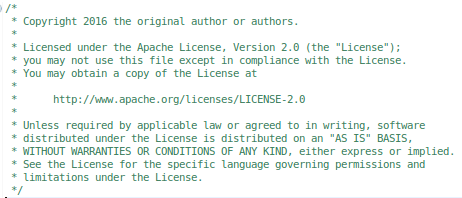

Spring Tool Suite 3.8.0: New and Noteworthy
Table of Contents
Eclipse Neon (4.6.0)
The default STS distribution is now based on the recently released Eclipse Neon (4.6) release.
Highlights from this Eclipse Neon release include substring code completion for Java content assist, word-wrap in text editors, commands/shortcuts/pinch gestures to zoom into text editors (especially useful when giving presentations), and more. Please find additional details in the Eclipse Neon Platform New and Noteworthy.
Pivotal tc Server updated to 3.1.4
The latest Pivotal tc Server release 3.1.4 is now included in the STS distribution bundle.
Support for Spring Insight removed
The support for Spring Insight that was part of the tc-server support got removed.
Buildship notification
We added a plugin from Eclipse Buildship to notify our users of using Eclipse Buildship instead of the legacy STS support for Gradle in the future.
Spring Tooling
Spring Boot Dashboard: customizable labels for CF targets
You can now change the labels for CF target nodes in the Boot Dashboard View. To do so, right-click a node and select "Customize... >> Customize Label...":

Spring Boot Dashboard: advanced support for multi-app manifest files
tbd
Spring Boot Dashboard: choose to remember password or not
tdb

Spring Boot Dashboard: customizable apps manager URL
tdb
Spring Boot Dashboard: filter apps by project name
The filter in the boot dashboard is now also aware of project names. No need to organize your projects into working sets anymore, just type in a part of the project name and see the filtered list of projects in the boot dashboard.

Spring Boot: additional code templates
Based on input from Spring Boot Core developers we have created some code templates useful in developing Spring/Spring Boot apps.
The templates are invoked through Eclipse's content-assist (i.e. you press CTRL-SPACE) and shown as completions when you type the template's name (or even just a part of the name).
Some templates are context-sensitive. This means that there are two or more versions of the template that expand into a different pattern, depending on the context you are in. For example the notnull template expands to something that uses JUnit's assert in test code, but it expands into something that uses Spring's assert anywhere else.
Below is a table showing all the templates we have added in this release:
| Name[context] | Screenshot |
|---|---|
| main |  |
notnull[spring] |  |
| notnull[test] |  |
| asl |  |
| jumock |  |
| eerule[test-member] |  |
| eerule[test-statement] |  |
| jumockmvcwac |  |
| formatter-off |  |
| logger |  |
| logi |  |
| loge |  |
| logw |  |
| rtex |  |
Note: The "formatter-off" template is special and can be applied from the "Surround With..." menu:

Spring Boot: JAR type search now asks for confirmation
"Jar Type Search" is a feature that was introduced in STS 3.5.0. It provides content-assist proposals in Spring Boot projects, for types that are not (yet) on the classpath. When selecting such a proposal the required dependency is automatically added to the project's maven pom.
Some people liked this, but others found it confusing or annoying rather than helpful because it was too easy to add undesirable elements to a pom accidentally.
STS 3.8.0 addresses this by asking for explicit confirmation before making changes to your pom. The confirmation dialog also has a 'Disable' button, which you can click to disable it completely.

Spring Boot: trigger devtools restart manually
tbd
Improvements to the Spring Boot YML and Properties Editors
Validation of comma-separated lists in the .properties editor
The Spring Boot Properties editor now knows how to check the validity of a list of comma-separated values. For example:

Content-assist in comma-separated lists in the .properties editor

Quickfix for deprecated propertie in yml and properties editor
Both the yml and properties editor now provide a quickfix for deprecated property names (if the property defines a replacement in its metadata).
Check for duplicate keys in yml editor

Note: The yml quickfix is smart enough to not just change the name of a property in-place but also moves it to a different place in the yml structure as needed:

TODO: The following stuff below needs to be fleshed out and organized.
- Support for 'class-reference' value provider.
- Support for 'handle-as' value provider.
- Basic content-assist for 'Resource Type' in yml/props editor.
- JavaDoc for enum values shown in CA value proposals and hovers in props abd yml editor.
- Hyperlink click works for enum values
- Show error for duplicate props in property file
Developer Productvity Bits
We implemented a number of little things to improve the general developer producitivity when working with the Spring Tool Suite and Eclipse. Here are the little improvements in detail.
Toggle Line Number Visibility Action:

Want to rename tests, too?
After you rename a class, STS will check if there is a test class with a similar name. If it finds one, it will ask you if you want to rename that too.

more defaults for statc imports
use type for new statement that matches the assignment
Miscellaneous
Issues resolved in this release
Here is a full list of resolved bugs and enhancement requests for 3.8.0:
Useful Links
Download STS: https://spring.io/tools/sts/all
STS Issue tracker: https://issuetracker.springsource.com/browse/STS
Known issues in this release
Spring Boot dashboard ngrok tunneling feature doesn't support Spring Cloud Services yet
The Spring Boot Dashboards ngrok tunnel feature doesn't work yet with remote service registries from Spring Cloud Services. Instead it works with self-deployed Eureka service registry apps on CF only (as described here). We are working on enhancing the ngrok tunnel feature to directly support Spring Cloud Services in the near future. In the meantime we published a tech note that describes how to setup ngrok tunneling in combination with SCS manually.
Conflicting duplicate lifecycle mapping errors in Maven projects upgrading from STS 3.6.x
Sometimes Maven projects show up with a red error (talking about a duplicate lifecycle mapping conflict) after upgrading STS from 3.6.x to the latest 3.7.2 version. In this case, please update the Maven support for Eclipse/STS to the latest version, as described here: STS-4236.
Error after updating from STS 3.7.0
Sometimes after updating an existing STS 3.7.0 installation to 3.7.1 an error dialog pops up and STS doesn't start. This is a known but not yet solved problem. If you come across this issue, please press "OK" on the dialog and restart STS. It will open up fine, including all the updated components.
No repository available when checking for updates
If you have used a pre-release version of Eclipse Mars or STS, the embedded Eclipse Oomph technology created a cache of p2 repositores in your home directory. This cached p2 data can cause issues when using STS 3.7.0 or Eclipse Mars. The error message looks like STS/Eclipse fails to read information from the main Eclipse Mars p2 repository.
In case you encounter this error, please stop Eclipse/STS, go to your home directory, delete "~/.eclipse/org.eclipse.oomph.p2", and restart Eclipse/STS. The related Eclipse bug is: Bug 470912.
Live configuration-metadata generation requires Spring Boot 1.2.2
Spring Boot 1.2.1 configuration processor does not work correctly when executed from Eclipse's incremental build. This issue is fixed in Spring Boot 1.2.2. This only affects 'live' metadata generated from your own source code, not the metadata that is packaged inside spring-boot jars themselves. So you can still use older versions of Boot, but the 'live metadata' updates will not be accurate. See Spring Boot issue GH-2313 for details.
Dashboard and Retina Displays
When running STS on top of a JDK7, the new dashboard looks a bit blurry when using a HiRes (Retina) display, for example on a Retina MacBook Pro. This is due to the underlying browser technology that is used to display the dashboard content and that is coming from JavaFX. The JavaFX version that ships with JDK7 doesn't support retina displays. The solution for this is to run STS on top of a JDK8 build. The JavaFX version that comes with JDK8 supports retina displays.
Dashboard on JDK9
The JavaFX-based main STS dashboard doesn't work when running STS on top of an early-access version of JDK9. As a workaround run STS on a JDK8 or switch the dashboard back to the old (non-JavaFX-based) version via the preferences.
Setting the JDK
STS requires a JDK to run on top of. Nevertheless the native launcher component might pick up a JRE automatically if you don't specify which JDK to run STS on top of. To avoid this, you can specify the JDK in the sts.ini file that comes with your STS installation. Add a line at the beginning "-vm" and an additional line below that which points to the "javaw" executable of the JDK on your machine.
Issues on Linux (GTK3)
Eclipse 4.5, upon which STS and GGTS are based, is the first Eclipse release where GTK3 is the default for the SWT widget library. There are some issues with this still:
- STS New Dashboard doesn't work under GTK3 because it uses JavaFX which is not currently compatible with GTK3. Instead the old dashboard will open.
- The Eclipse editor may be slow to respond (Eclipse Bug 434898).
You may also experience other UI rendering glitches. If you exprience any of these problems you can avoid them by forcing SWT to switch back to using GTK2. Just set the environment variable "SWT_GTK3=0" before launching STS or GGTS.